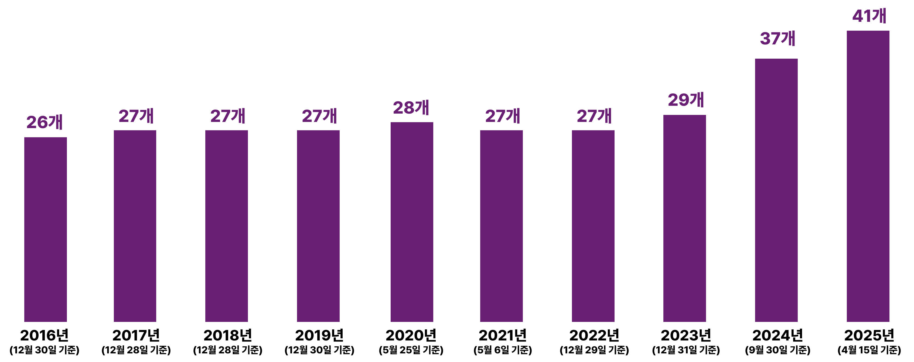
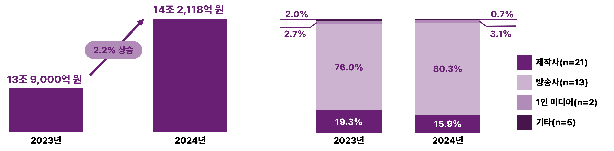
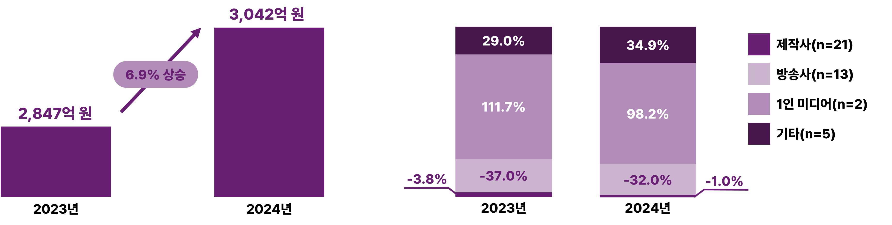
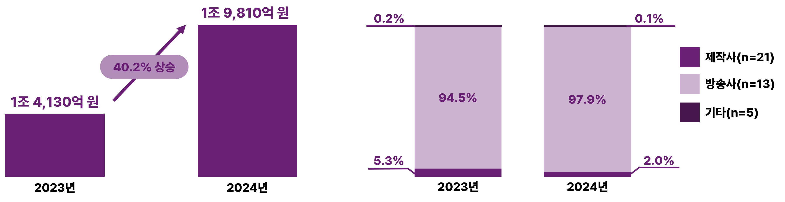

지난 10년 간 코스피와 코스닥에 상장된 기업 중 방송영상 관련 사업을 영위하는 기업의 수를 보면 2023년까지 26개~29개를 유지하다가 2024년에 37개, 2025년에는 41개로 비교적 크게 증가한 것으로 나타났다.
[그림 1] 연도별 방송영상 분야 상장사 수 추이 (단위: 개)
* 2016년~2024년 상장사 수는 한국콘텐츠진흥원에서 매년 분기별로 발행하는 「콘텐츠산업 분기별 동향분석」 자료에 근거함. 2025년 상장사 수는 4월 15일 기준으로 한국거래소에서 제공하는 국내 상장기업 목록 중 방송영상 관련 사업을 영위하는 기업을 발췌함
이와 같은 증가 추세는 영상물 시장 환경의 변화와 관련이 깊다. 방송영상 부문에 추가된 상장사들을 보면 대부분 신규 사업자가 아니라 기존 다른 사업 부문을 영위하다가 방송으로 영역을 확장하고 있음을 알 수 있다.
첫 번째 유형은 OTT 서비스 시장의 확대로 영화와 방송의 경계가 모호해지고 콘텐츠 IP가 중요해지면서 영화사업자나 매니지먼트사가 적극적으로 영상물 사업으로 수렴하는 경우다. 2024년에 추가된 ‘아센디오’, ‘판타지오’, ‘The E&M’, ‘티엔엔터테인먼트’, ‘와이랩’ 등이 대표적인 사례다.
두 번째 유형은 숏폼 제작사업에 진출하면서 방송사업자로 진입한 경우다. 24년에는 게임사업을 하던 ‘네오리진’이, 25년에는 음악 중심의 공연기획 사업을 하던 ‘타조엔터테인먼트’가 숏폼 사업을 시작하면서 새롭게 방송영상 상장사로 추가되었다. 각 기업의 사업보고서에 의하면 ‘네오리진’은 종속기업 (주)폭스미디어에서 숏폼 드라마 플랫폼 ‘탑릴스’를 론칭하여 운영하고 있으며, ‘타조엔터테인먼트’ 역시 숏폼 업로드앱을 보유하고 있으나 숏폼 드라마 아카이빙을 위해 필요한 콘텐츠 확보를 위해 해외 플랫폼을 먼저 공략한다는 계획이다.
41개사의 매출액을 중심으로 방송영상 상장사의 시장 성과를 살펴본 결과, 2023년에 13조 9,000억 원에서 2024년에는 2.2% 상승한 14조 2,118억 원으로 소폭 상승한 것으로 나타났다.¹⁾ 매출을 기준으로 핵심 영위 사업을 제작사, 방송사, 1인미디어, 기타(숏폼, 지주회사, 유통업 등)로 구분하여 살펴본 결과 매출의 약 80%는 13개의 방송사(지상파, PP, 지역방송사, 홈쇼핑 등)에서 발생하고 있는 것으로 나타났다. 제작사는 상장사 수는 21개로 가장 많았지만, 23년에는 19.3%, 25년에는 15.9%의 매출 비중을 차지하는 것으로 나타나 방송사와 제작사 간 매출액 차이가 크다는 것을 알 수 있다.
[그림 2] 방송영상 상장사의 2024년 시장 성과 (매출액)

영업이익 역시 2023년 대비 2024년에는 6.9% 상승한 것으로 나타났다. 세부 사업자 유형별로 보면, 방송사의 영업이익 비중이 가장 크게 나타났으나, 23년 111.7%에 비해 24년에는 98.2%로 감소했다. 대신 1인미디어 사업자의 영업이익 비중이 23년 29%에서 24년에 34.9%로 증가했으며, 제작사는 여전히 영업손실을 보이고 있기는 하지만 23년 –37%에서 24년 –32%로 소폭 증가한 것으로 나타났다.
개별 사업자로 보면 방송사의 경우 케이블 및 지역 방송사(LG헬로비전, 티비씨, KNN, KX), 홈쇼핑 채널(현대홈쇼핑, GS리테일), 한국경제TV가 영업이익을 나타내고 있었다. CJENM은 23년도 영업손실을 보이다가 24년에 영업이익으로 돌아섰다.
제작사 중에서는 스튜디오드래곤, 팬엔터테인먼트, SMC&C가 23년과 24년 모두 영업이익을 보이고 있었다. 이 중 영업이익율(수익성)이 가장 좋은 곳은 평균 6~7%대를 보이는 스튜디오드래곤이다. 그러나 세 제작사 모두 23년 대비 24년 영업이익율이 감소한 것으로 나타났다. 23년에 영업적자를 보였다가 24년에 영업이익으로 돌아온 제작사도 있다. 쇼박스는 23년 –70.4%의 영업수익률을 보였다가 24년에 26.3%의 영업 이익률을 달성하여 21개 제작사 중 24년도 수익성이 가장 높았다. 삼화네트웍스와 키이스트 역시 23년 영업손실에서 24년 영업이익으로 회복한 것으로 나타났다.
[그림 3] 방송영상 상장사의 2024년 시장 성과 (영업이익)

방송영상 부문의 수출은 2023년 1조 4,130억 원보다 2024년에는 1조 9,810억 원으로 40.2%가 상승한 것으로 나타났다.
수출 역시 방송사 부문의 비중이 가장 크다. 그런데 사실상 개별 기업을 들여다 보면 CJENM의 수출액이 방송사 수출액의 90% 이상을 차지하고 있다.
제작사 21개사 중 수출이 발생한 기업은 12개로 약 절반 가량이다. 이 중 콘텐트리중앙과 캔버스엔, 초록뱀미디어, 블리츠웨이엔터테인먼트가 23년 대비 24년 수출액이 증가했다. 이 중 캔버스엔은 24년 12월에 기존 '빅토리콘텐츠'에서 사명을 변경하고, 지상파 중심 드라마 제작(MBC, KBS, 종편 등)뿐 아니라 24년 업종에 블록체인, 금융상품, 영화 기술, 신기술 적용 사업 등을 추가함으로써 사업다각화를 위한 신규 사업 진출을 모색하고 있는 것으로 나타났다. 초록뱀미디어의 경우 수출이 방송 제작, 방송채널, 매니지먼트에서 발생한 것을 합산한 것으로 이 중 매니지먼트 수익이 가장 높다.
[그림 4] 방송영상 상장사의 2024년 시장 성과 (수출액)
디지털 환경으로 빠르게 재편되는 콘텐츠 시장 환경에 대응하기 위해 관련 기업들은 단일 영역에 머무르지 않고 다양한 장르와 연관 산업 분야로 사업의 영역을 확장하고 있다. 특히 24년에는 인공지능과 같은 신기술 기반의 영역에 각 상장사들이 대비하는 모습이 두드러진다. 또한 숏폼드라마의 시장성에 대한 기대감이 높아지면서 웹콘텐츠 기반 사업자들의 영상물 부문으로의 진입도 보인다. 특히 자사 IP를 활용한 다양한 산업군으로의 영역 확장도 특징적으로 나타나는 부분이다. 이와 같은 기업들의 신규 사업에 대한 적극적인 행보로 인해 전통적인 방송산업의 경계가 흐려지고 있음을 알 수 있다. 수익성이 좋은 비즈니스 모델 개발에 집중해야 하는 콘텐츠 관련 상장사의 경우 이런 경향이 더욱 강화될 것으로 보인다.
- ¹⁾ 참고로 한국콘텐츠진흥원의 2023년 3분기 콘텐츠산업 동향 분석 보고서에서는 동 시기의 방송 부문 매출액을 약 2조 3,541억 원으로 집계하고 있다. 해당 보고서에는 여러 산업을 영위하고 있는 사업체에 대해서는 해당 사업 부문만큼 별도 추출하여 적용하였으나, 본 분석에서는 방송뿐 아니라 콘텐츠산업 연관 산업일 경우에도 포함하고 있기 때문에 매출액 추출 방법에 차이가 있다. 더구나 본 분석에서는 25년 4월 15일을 기준으로 방송영상 상장사 41개에 대한 23년도 분석을 하고 있어 분석대상과 방법이 다름을 밝힌다.